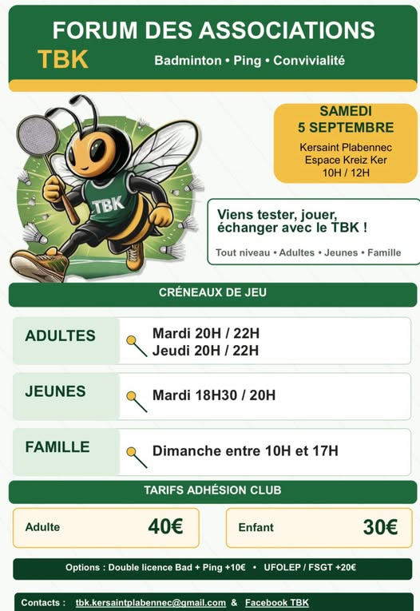
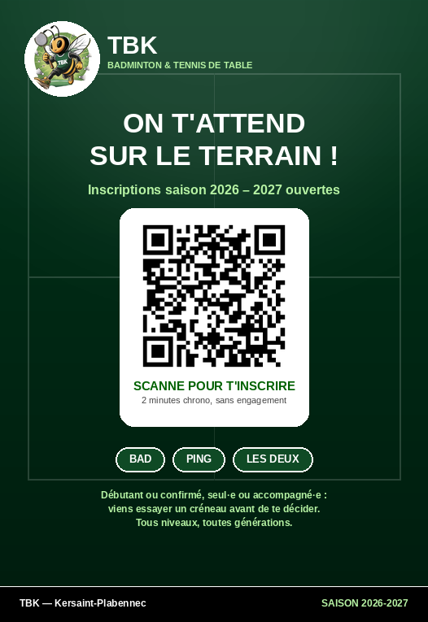

Kersaint-Plabennec · Finistère
Smashez la
routine.
TBK réunit badistes et pongistes de tous niveaux autour de deux raquettes, une salle, et une bonne ambiance. Débutant curieux ou compétiteur du dimanche, votre place est sur le terrain.
01 — Le club
Deux sports, un seul terrain d'entente
Volants, smashs et fous rires : nos créneaux mêlent joueurs loisirs et compétiteurs, en simple comme en double. Prêt de matériel possible pour découvrir avant de s'équiper.
Tables ouvertes en accès libre et séances encadrées pour progresser sur le jeu de jambes, le service et le placement. Ambiance conviviale garantie, niveau débutant bienvenu.
Soirées raquettes, tournois internes, forum des associations, moments partagés en dehors du terrain : TBK, c'est aussi une communauté qui se retrouve toute l'année.
02 — Rendez-vous
Tournoi TBK
11 septembre 2026
Simples et doubles, tous niveaux, esprit compétition et convivialité. Inscriptions ouvertes — venez seul·e ou avec votre partenaire.
03 — À venir
Forum des associations
Le 5 septembre 2026, venez découvrir le club sur notre stand : essais de raquettes, présentation des créneaux et inscriptions sur place.
Une occasion idéale pour poser toutes vos questions avant de vous lancer.


Saison 2026 / 2027
Envie de nous rejoindre ?
Scannez ce QR code avec votre téléphone, ou cliquez ici, pour remplir votre demande d'inscription en quelques minutes.